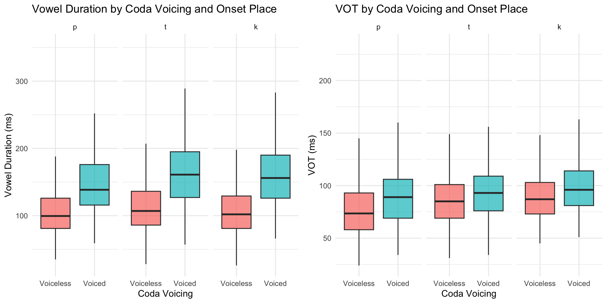
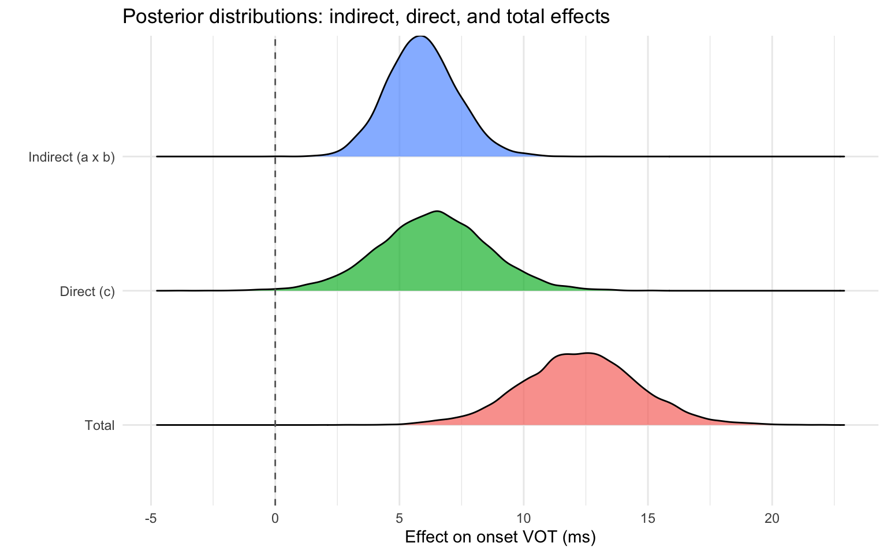

This analysis tests whether coda voicing exerts an indirect effect on onset voice onset time (VOT), mediated by vowel duration:
\[\text{Coda Voicing} \xrightarrow{a} \text{Vowel Duration} \xrightarrow{b} \text{VOT}\]
This document supersedes an earlier draft that used frequentist SEM
(lavaan) and a random-intercept-only mediation approach
(mediation + lme4). It is rewritten here to be
consistent with the primary VOT analysis in every respect that matters
for comparability:
vot and vdur are
in milliseconds throughout (the earlier draft used seconds).brms using by-subject random slopes for place of
articulation, coda voicing, and their interaction — the same maximal
logic used for the primary VOT model, applied consistently to both
mediation equations. A fully joint multivariate version, which links the
two equations’ random effects into one shared correlation matrix, was
attempted first but proved computationally impractical (78 correlation
terms from 20 subjects); that attempt and the reasoning for stepping
back from it are documented in Section 5.mediation/lme4 approach, and is standard
practice when a fully joint model is not tractable.A frequentist comparison (the original
lavaan/mediation approach) is retained at the
end as an optional robustness check, not as the primary analysis.
library(brms)
library(tidyverse)
library(posterior)Data preparation matches the primary VOT analysis exactly:
ons_poa coded once as a
p/t/k factor (reference level
/p/), coda_vc as a 0/1 factor, and
vot/vdur converted from seconds to
milliseconds.
data <- read.csv("/Users/chandan/Desktop/GitHub/Burst_voice/Data/data_12-11-24.csv",
header = TRUE)
data <- data %>%
mutate(
ons_poa = factor(ons_poa, levels = c(1, 2, 3), labels = c("p", "t", "k")),
coda_vc = factor(coda_vc, levels = c(0, 1)),
vot = vot * 1000,
vdur = vdur * 1000
)
data_mod <- data %>% filter(!is.na(vot), !is.na(vdur))
number_of_subs <- length(unique(data_mod$sub))
number_of_subs## [1] 20data_mod %>%
group_by(ons_poa, coda_vc) %>%
summarise(
n = n(),
mean_vot = round(mean(vot), 1),
mean_vdur = round(mean(vdur), 1),
.groups = "drop"
)## # A tibble: 6 × 5
## ons_poa coda_vc n mean_vot mean_vdur
## <fct> <fct> <int> <dbl> <dbl>
## 1 p 0 542 78.7 104.
## 2 p 1 312 90.8 149
## 3 t 0 424 89.4 111.
## 4 t 1 351 97.1 164.
## 5 k 0 388 92.4 106.
## 6 k 1 349 100. 162.p1 <- ggplot(data_mod, aes(x = coda_vc, y = vdur, fill = coda_vc)) +
geom_boxplot(alpha = 0.7, outlier.shape = NA) +
facet_wrap(~ons_poa) +
labs(title = "Vowel Duration by Coda Voicing and Onset Place",
x = "Coda Voicing", y = "Vowel Duration (ms)") +
scale_x_discrete(labels = c("Voiceless", "Voiced")) +
theme_minimal() + theme(legend.position = "none")
p2 <- ggplot(data_mod, aes(x = coda_vc, y = vot, fill = coda_vc)) +
geom_boxplot(alpha = 0.7, outlier.shape = NA) +
facet_wrap(~ons_poa) +
labs(title = "VOT by Coda Voicing and Onset Place",
x = "Coda Voicing", y = "VOT (ms)") +
scale_x_discrete(labels = c("Voiceless", "Voiced")) +
theme_minimal() + theme(legend.position = "none")
gridExtra::grid.arrange(p1, p2, ncol = 2)
The mediator equation (vdur ~ ons_poa * coda_vc) and
outcome equation (vot ~ vdur + ons_poa * coda_vc) are fit
as two separate maximal-structure brms
models, each with by-subject random slopes for place of articulation,
coda voicing, and their interaction (plus, in the outcome equation, a
random slope for vowel duration itself). This mirrors exactly the
random-effects structure of the primary VOT model, applied to each
mediation path individually.
bf_vdur <- bf(vdur ~ ons_poa * coda_vc + (1 + ons_poa * coda_vc | sub))
bf_vot <- bf(vot ~ vdur + ons_poa * coda_vc + (1 + vdur + ons_poa * coda_vc | sub))Why not fit these jointly? A fully joint
multivariate model (linking both equations’ random effects into one
shared correlation matrix via brms’ |q|
syntax) would be the more complete approach, since it would capture any
correlation between a speaker’s mediator-equation and outcome-equation
random effects. We attempted this first; combining both equations’
random effects yields 13 correlated by-subject terms (78 unique
correlations) from only 20 subjects, and in practice this model did not
sample in a practical amount of time even with an increased
adapt_delta and max_treedepth. Fitting the two
equations separately is a well-established, more tractable
approximation, at the cost of treating the two equations’ random effects
as independent across equations. See Section 5 for the joint model
specification and a discussion of when it might be worth revisiting.
Priors are tiered by epistemic status, extending the same logic used for the primary VOT model’s priors:
lb = 0.Because the two equations are now fit as separate (single-response)
models, priors no longer need resp = qualifiers.
# Check before fitting, as always
get_prior(bf_vdur, data = data_mod)## prior class coef group resp dpar nlpar lb ub
## (flat) b
## (flat) b coda_vc1
## (flat) b ons_poak
## (flat) b ons_poak:coda_vc1
## (flat) b ons_poat
## (flat) b ons_poat:coda_vc1
## lkj(1) cor
## lkj(1) cor sub
## student_t(3, 122, 46) Intercept
## student_t(3, 0, 46) sd 0
## student_t(3, 0, 46) sd sub 0
## student_t(3, 0, 46) sd coda_vc1 sub 0
## student_t(3, 0, 46) sd Intercept sub 0
## student_t(3, 0, 46) sd ons_poak sub 0
## student_t(3, 0, 46) sd ons_poak:coda_vc1 sub 0
## student_t(3, 0, 46) sd ons_poat sub 0
## student_t(3, 0, 46) sd ons_poat:coda_vc1 sub 0
## student_t(3, 0, 46) sigma 0
## tag source
## default
## (vectorized)
## (vectorized)
## (vectorized)
## (vectorized)
## (vectorized)
## default
## (vectorized)
## default
## default
## (vectorized)
## (vectorized)
## (vectorized)
## (vectorized)
## (vectorized)
## (vectorized)
## (vectorized)
## defaultget_prior(bf_vot, data = data_mod)## prior class coef group resp dpar nlpar lb ub
## (flat) b
## (flat) b coda_vc1
## (flat) b ons_poak
## (flat) b ons_poak:coda_vc1
## (flat) b ons_poat
## (flat) b ons_poat:coda_vc1
## (flat) b vdur
## lkj(1) cor
## lkj(1) cor sub
## student_t(3, 86, 25.2) Intercept
## student_t(3, 0, 25.2) sd 0
## student_t(3, 0, 25.2) sd sub 0
## student_t(3, 0, 25.2) sd coda_vc1 sub 0
## student_t(3, 0, 25.2) sd Intercept sub 0
## student_t(3, 0, 25.2) sd ons_poak sub 0
## student_t(3, 0, 25.2) sd ons_poak:coda_vc1 sub 0
## student_t(3, 0, 25.2) sd ons_poat sub 0
## student_t(3, 0, 25.2) sd ons_poat:coda_vc1 sub 0
## student_t(3, 0, 25.2) sd vdur sub 0
## student_t(3, 0, 25.2) sigma 0
## tag source
## default
## (vectorized)
## (vectorized)
## (vectorized)
## (vectorized)
## (vectorized)
## (vectorized)
## default
## (vectorized)
## default
## default
## (vectorized)
## (vectorized)
## (vectorized)
## (vectorized)
## (vectorized)
## (vectorized)
## (vectorized)
## (vectorized)
## defaultvdur_priors <- c(
prior(normal(0, 150), class = Intercept, lb = 0),
prior(normal(55, 30), class = b, coef = coda_vc1),
prior(normal(0, 25), class = b, coef = "ons_poat:coda_vc1"),
prior(normal(0, 25), class = b, coef = "ons_poak:coda_vc1"),
prior(normal(0, 30), class = sd),
prior(normal(0, 30), class = sigma),
prior(lkj(2), class = cor)
)
vot_priors <- c(
prior(normal(0, 100), class = Intercept, lb = 0),
prior(normal(15, 8), class = b, coef = ons_poat),
prior(normal(30, 12), class = b, coef = ons_poak),
prior(normal(0.15, 0.15), class = b, coef = vdur),
prior(normal(0, 20), class = b, coef = coda_vc1),
prior(normal(0, 15), class = b, coef = "ons_poat:coda_vc1"),
prior(normal(0, 15), class = b, coef = "ons_poak:coda_vc1"),
prior(normal(0, 20), class = sd),
prior(normal(0, 25), class = sigma),
prior(lkj(2), class = cor)
)Each equation is fit twice, as with the primary VOT model: once with
brms’ default priors, once with the tiered informed priors
above. These are now single-equation maximal models — the same structure
that converged cleanly and reasonably quickly for the primary VOT model
— so standard settings (adapt_delta = 0.95, default
max_treedepth) should suffice; the earlier joint model’s
need for far more aggressive settings was itself a symptom of that model
being impractically large.
# Mediator equation (vdur ~ ons_poa * coda_vc)
model_M_default <- brm(
bf_vdur, data = data_mod, family = gaussian(),
chains = 4, iter = 4000, warmup = 1500, cores = 4, seed = 123,
control = list(adapt_delta = 0.95)
)
model_M_informed <- brm(
bf_vdur, data = data_mod, family = gaussian(),
prior = vdur_priors,
chains = 4, iter = 4000, warmup = 1500, cores = 4, seed = 123,
control = list(adapt_delta = 0.95)
)
# Outcome equation (vot ~ vdur + ons_poa * coda_vc)
model_Y_default <- brm(
bf_vot, data = data_mod, family = gaussian(),
chains = 4, iter = 4000, warmup = 1500, cores = 4, seed = 123,
control = list(adapt_delta = 0.95)
)
model_Y_informed <- brm(
bf_vot, data = data_mod, family = gaussian(),
prior = vot_priors,
chains = 4, iter = 4000, warmup = 1500, cores = 4, seed = 123,
control = list(adapt_delta = 0.95)
)
# Save immediately -- these take a while to fit and losing them to a
# crashed/restarted session is costly
saveRDS(model_M_default, "model_M_default.rds")
saveRDS(model_M_informed, "model_M_informed.rds")
saveRDS(model_Y_default, "model_Y_default.rds")
saveRDS(model_Y_informed, "model_Y_informed.rds")print(summary(model_M_informed), digits = 2)## Family: gaussian
## Links: mu = identity
## Formula: vdur ~ ons_poa * coda_vc + (1 + ons_poa * coda_vc | sub)
## Data: data_mod (Number of observations: 2366)
## Draws: 4 chains, each with iter = 4000; warmup = 1500; thin = 1;
## total post-warmup draws = 10000
##
## Multilevel Hyperparameters:
## ~sub (Number of levels: 20)
## Estimate Est.Error l-95% CI u-95% CI
## sd(Intercept) 17.05 3.20 11.91 24.61
## sd(ons_poat) 2.27 1.70 0.10 6.38
## sd(ons_poak) 2.14 1.62 0.09 6.07
## sd(coda_vc1) 21.02 4.07 14.42 30.12
## sd(ons_poat:coda_vc1) 3.06 2.31 0.12 8.51
## sd(ons_poak:coda_vc1) 3.54 2.61 0.16 9.84
## cor(Intercept,ons_poat) 0.14 0.33 -0.53 0.72
## cor(Intercept,ons_poak) 0.12 0.33 -0.56 0.71
## cor(ons_poat,ons_poak) 0.07 0.34 -0.59 0.68
## cor(Intercept,coda_vc1) 0.03 0.21 -0.38 0.43
## cor(ons_poat,coda_vc1) -0.08 0.33 -0.67 0.57
## cor(ons_poak,coda_vc1) 0.09 0.32 -0.56 0.68
## cor(Intercept,ons_poat:coda_vc1) 0.11 0.33 -0.55 0.69
## cor(ons_poat,ons_poat:coda_vc1) -0.03 0.34 -0.66 0.61
## cor(ons_poak,ons_poat:coda_vc1) 0.03 0.33 -0.61 0.66
## cor(coda_vc1,ons_poat:coda_vc1) -0.12 0.33 -0.70 0.54
## cor(Intercept,ons_poak:coda_vc1) 0.11 0.32 -0.56 0.69
## cor(ons_poat,ons_poak:coda_vc1) 0.03 0.34 -0.62 0.66
## cor(ons_poak,ons_poak:coda_vc1) -0.03 0.34 -0.65 0.61
## cor(coda_vc1,ons_poak:coda_vc1) 0.15 0.33 -0.53 0.73
## cor(ons_poat:coda_vc1,ons_poak:coda_vc1) 0.05 0.34 -0.61 0.66
## Rhat Bulk_ESS Tail_ESS
## sd(Intercept) 1.00 3121 5468
## sd(ons_poat) 1.00 4853 5258
## sd(ons_poak) 1.00 5674 5580
## sd(coda_vc1) 1.00 5087 6939
## sd(ons_poat:coda_vc1) 1.00 7002 6128
## sd(ons_poak:coda_vc1) 1.00 5837 5403
## cor(Intercept,ons_poat) 1.00 14507 6917
## cor(Intercept,ons_poak) 1.00 13310 7107
## cor(ons_poat,ons_poak) 1.00 10286 7632
## cor(Intercept,coda_vc1) 1.00 5671 6283
## cor(ons_poat,coda_vc1) 1.00 1488 2762
## cor(ons_poak,coda_vc1) 1.00 1848 3395
## cor(Intercept,ons_poat:coda_vc1) 1.00 15653 7064
## cor(ons_poat,ons_poat:coda_vc1) 1.00 11502 7793
## cor(ons_poak,ons_poat:coda_vc1) 1.00 10077 7156
## cor(coda_vc1,ons_poat:coda_vc1) 1.00 11520 8005
## cor(Intercept,ons_poak:coda_vc1) 1.00 15571 7731
## cor(ons_poat,ons_poak:coda_vc1) 1.00 10094 7137
## cor(ons_poak,ons_poak:coda_vc1) 1.00 7341 7408
## cor(coda_vc1,ons_poak:coda_vc1) 1.00 10267 6990
## cor(ons_poat:coda_vc1,ons_poak:coda_vc1) 1.00 7570 8154
##
## Regression Coefficients:
## Estimate Est.Error l-95% CI u-95% CI Rhat Bulk_ESS Tail_ESS
## Intercept 103.33 4.26 94.92 111.81 1.00 1580 2959
## ons_poat 6.81 2.36 2.11 11.33 1.00 9363 7735
## ons_poak 2.68 2.37 -1.95 7.34 1.00 7873 8039
## coda_vc1 46.07 5.22 35.80 56.35 1.00 4920 5845
## ons_poat:coda_vc1 7.51 3.56 0.58 14.53 1.00 8630 7523
## ons_poak:coda_vc1 9.63 3.65 2.40 16.75 1.00 8405 7311
##
## Further Distributional Parameters:
## Estimate Est.Error l-95% CI u-95% CI Rhat Bulk_ESS Tail_ESS
## sigma 34.87 0.51 33.88 35.87 1.00 20469 7174
##
## Draws were sampled using sampling(NUTS). For each parameter, Bulk_ESS
## and Tail_ESS are effective sample size measures, and Rhat is the potential
## scale reduction factor on split chains (at convergence, Rhat = 1).sum(rstan::get_divergent_iterations(model_M_informed$fit))## [1] 0print(summary(model_Y_informed), digits = 2)## Family: gaussian
## Links: mu = identity
## Formula: vot ~ vdur + ons_poa * coda_vc + (1 + vdur + ons_poa * coda_vc | sub)
## Data: data_mod (Number of observations: 2366)
## Draws: 4 chains, each with iter = 4000; warmup = 1500; thin = 1;
## total post-warmup draws = 10000
##
## Multilevel Hyperparameters:
## ~sub (Number of levels: 20)
## Estimate Est.Error l-95% CI u-95% CI
## sd(Intercept) 26.83 4.30 19.70 36.44
## sd(vdur) 0.11 0.02 0.07 0.16
## sd(ons_poat) 5.69 1.46 3.18 8.82
## sd(ons_poak) 1.68 1.22 0.07 4.58
## sd(coda_vc1) 8.21 1.86 5.12 12.39
## sd(ons_poat:coda_vc1) 1.99 1.49 0.07 5.50
## sd(ons_poak:coda_vc1) 4.76 2.30 0.45 9.36
## cor(Intercept,vdur) -0.24 0.19 -0.58 0.15
## cor(Intercept,ons_poat) -0.09 0.21 -0.49 0.33
## cor(vdur,ons_poat) 0.01 0.23 -0.43 0.44
## cor(Intercept,ons_poak) -0.09 0.30 -0.64 0.51
## cor(vdur,ons_poak) -0.09 0.31 -0.64 0.52
## cor(ons_poat,ons_poak) 0.10 0.30 -0.52 0.64
## cor(Intercept,coda_vc1) -0.04 0.20 -0.43 0.36
## cor(vdur,coda_vc1) -0.20 0.21 -0.59 0.23
## cor(ons_poat,coda_vc1) -0.25 0.22 -0.66 0.20
## cor(ons_poak,coda_vc1) 0.02 0.30 -0.55 0.59
## cor(Intercept,ons_poat:coda_vc1) -0.02 0.30 -0.60 0.55
## cor(vdur,ons_poat:coda_vc1) 0.07 0.31 -0.52 0.64
## cor(ons_poat,ons_poat:coda_vc1) -0.05 0.31 -0.62 0.57
## cor(ons_poak,ons_poat:coda_vc1) -0.06 0.32 -0.65 0.57
## cor(coda_vc1,ons_poat:coda_vc1) -0.11 0.31 -0.67 0.51
## cor(Intercept,ons_poak:coda_vc1) -0.08 0.25 -0.55 0.43
## cor(vdur,ons_poak:coda_vc1) -0.06 0.26 -0.56 0.47
## cor(ons_poat,ons_poak:coda_vc1) 0.21 0.27 -0.37 0.69
## cor(ons_poak,ons_poak:coda_vc1) 0.02 0.31 -0.58 0.60
## cor(coda_vc1,ons_poak:coda_vc1) -0.17 0.27 -0.64 0.41
## cor(ons_poat:coda_vc1,ons_poak:coda_vc1) -0.03 0.32 -0.62 0.58
## Rhat Bulk_ESS Tail_ESS
## sd(Intercept) 1.00 3513 5930
## sd(vdur) 1.00 4524 5790
## sd(ons_poat) 1.00 5507 6687
## sd(ons_poak) 1.00 3371 4705
## sd(coda_vc1) 1.00 5502 7045
## sd(ons_poat:coda_vc1) 1.00 4489 4926
## sd(ons_poak:coda_vc1) 1.00 2512 2393
## cor(Intercept,vdur) 1.00 5429 6990
## cor(Intercept,ons_poat) 1.00 8008 7770
## cor(vdur,ons_poat) 1.00 6743 7609
## cor(Intercept,ons_poak) 1.00 16288 7847
## cor(vdur,ons_poak) 1.00 14711 7079
## cor(ons_poat,ons_poak) 1.00 11125 7843
## cor(Intercept,coda_vc1) 1.00 8655 7682
## cor(vdur,coda_vc1) 1.00 6605 7481
## cor(ons_poat,coda_vc1) 1.00 4925 6581
## cor(ons_poak,coda_vc1) 1.00 2446 4194
## cor(Intercept,ons_poat:coda_vc1) 1.00 19224 7077
## cor(vdur,ons_poat:coda_vc1) 1.00 15733 7972
## cor(ons_poat,ons_poat:coda_vc1) 1.00 13147 6876
## cor(ons_poak,ons_poat:coda_vc1) 1.00 8066 7873
## cor(coda_vc1,ons_poat:coda_vc1) 1.00 10937 8107
## cor(Intercept,ons_poak:coda_vc1) 1.00 13498 7270
## cor(vdur,ons_poak:coda_vc1) 1.00 12157 7789
## cor(ons_poat,ons_poak:coda_vc1) 1.00 9118 7923
## cor(ons_poak,ons_poak:coda_vc1) 1.00 5210 7190
## cor(coda_vc1,ons_poak:coda_vc1) 1.00 9317 7048
## cor(ons_poat:coda_vc1,ons_poak:coda_vc1) 1.00 5530 7816
##
## Regression Coefficients:
## Estimate Est.Error l-95% CI u-95% CI Rhat Bulk_ESS Tail_ESS
## Intercept 65.24 5.96 53.36 76.71 1.00 1455 3067
## vdur 0.13 0.03 0.08 0.18 1.00 2999 5112
## ons_poat 10.00 1.69 6.63 13.32 1.00 5722 7135
## ons_poak 13.47 1.20 11.14 15.88 1.00 11124 8220
## coda_vc1 6.35 2.25 1.87 10.75 1.00 5491 6142
## ons_poat:coda_vc1 -5.43 1.80 -8.97 -1.90 1.00 10924 7831
## ons_poak:coda_vc1 -5.42 2.08 -9.43 -1.26 1.00 8545 7192
##
## Further Distributional Parameters:
## Estimate Est.Error l-95% CI u-95% CI Rhat Bulk_ESS Tail_ESS
## sigma 16.84 0.25 16.36 17.34 1.00 18716 7523
##
## Draws were sampled using sampling(NUTS). For each parameter, Bulk_ESS
## and Tail_ESS are effective sample size measures, and Rhat is the potential
## scale reduction factor on split chains (at convergence, Rhat = 1).sum(rstan::get_divergent_iterations(model_Y_informed$fit))## [1] 0Path a comes from the mediator model’s coda_vc1
coefficient; path b and path c both come from the
outcome model (vdur and coda_vc1 coefficients,
respectively). Because a and b come from two
separately-fit models, we approximate their joint distribution by
pairing posterior draws index-by-index (both models are fit with the
same number of post-warmup draws per chain and the same seed structure,
so this pairing is arbitrary but consistent – it does not
reflect genuine posterior correlation between the two equations’
parameters, only their marginal uncertainty).
summarize_draws_custom <- function(x) {
c(estimate = mean(x),
lower = as.numeric(quantile(x, 0.025)),
upper = as.numeric(quantile(x, 0.975)))
}
compute_mediation_separate <- function(model_M, model_Y) {
a <- as_draws_df(model_M)$b_coda_vc1
b <- as_draws_df(model_Y)$b_vdur
c_direct <- as_draws_df(model_Y)$b_coda_vc1
indirect <- a * b # approximate: a, b treated as independent
direct <- c_direct
total <- direct + indirect
prop_mediated <- indirect / total
list(
a = summarize_draws_custom(a),
b = summarize_draws_custom(b),
indirect = summarize_draws_custom(indirect),
direct = summarize_draws_custom(direct),
total = summarize_draws_custom(total),
prop_mediated = summarize_draws_custom(prop_mediated),
draws = list(a = a, b = b, indirect = indirect,
direct = direct, total = total)
)
}
med_informed <- compute_mediation_separate(model_M_informed, model_Y_informed)
med_default <- compute_mediation_separate(model_M_default, model_Y_default)
bind_rows(
a = med_informed$a,
b = med_informed$b,
indirect = med_informed$indirect,
direct = med_informed$direct,
total = med_informed$total,
prop_mediated = med_informed$prop_mediated,
.id = "quantity"
) %>%
mutate(across(where(is.numeric), ~ round(.x, 3)))## # A tibble: 6 × 4
## quantity estimate lower upper
## <chr> <dbl> <dbl> <dbl>
## 1 a 46.1 35.8 56.3
## 2 b 0.128 0.076 0.181
## 3 indirect 5.92 3.26 8.78
## 4 direct 6.35 1.87 10.7
## 5 total 12.3 7.48 17.0
## 6 prop_mediated 0.494 0.279 0.785loo_M_default <- loo(model_M_default)
loo_M_informed <- loo(model_M_informed)
loo_compare(loo_M_default, loo_M_informed)## model elpd_diff se_diff p_worse diag_diff diag_elpd
## model_M_default 0.0 0.0 NA
## model_M_informed -0.1 0.3 0.63 |elpd_diff| < 4loo_Y_default <- loo(model_Y_default)
loo_Y_informed <- loo(model_Y_informed)
loo_compare(loo_Y_default, loo_Y_informed)## model elpd_diff se_diff p_worse diag_diff diag_elpd
## model_Y_informed 0.0 0.0 NA
## model_Y_default -0.8 0.3 1.00 |elpd_diff| < 4# Direct comparison of the indirect effect under both prior specs
summarize_draws_custom(med_default$draws$indirect)## estimate lower upper
## 5.883604 3.193482 8.876113summarize_draws_custom(med_informed$draws$indirect)## estimate lower upper
## 5.914918 3.254725 8.779243plot_df <- tibble(
effect = rep(c("Indirect (a x b)", "Direct (c)", "Total"), each = length(med_informed$draws$indirect)),
value = c(med_informed$draws$indirect, med_informed$draws$direct, med_informed$draws$total)
) %>%
mutate(effect = factor(effect, levels = c("Total", "Direct (c)", "Indirect (a x b)")))
ggplot(plot_df, aes(x = value, y = effect, fill = effect)) +
ggridges::geom_density_ridges(alpha = 0.7, scale = 0.9) +
geom_vline(xintercept = 0, linetype = "dashed", color = "grey40") +
labs(x = "Effect on onset VOT (ms)", y = "",
title = "Posterior distributions: indirect, direct, and total effects") +
theme_minimal() +
theme(legend.position = "none")
For completeness and reproducibility, this is the fully joint model
that was attempted before settling on the two-separate-equations
approach above. It links both equations’ random effects into a single
correlation matrix via brms’ |q| grouping
syntax, which would in principle be the more complete analysis (it does
not assume independence between a speaker’s mediator- and
outcome-equation random effects, unlike Section 4’s approach). In
practice, this model proved impractically slow to sample even with
adapt_delta = 0.99 and max_treedepth = 15, and
was abandoned in favor of Section 4’s approach. It may be worth
revisiting with substantially more compute time, a longer allowed
runtime, or a reduced random-slopes structure (e.g., dropping
place-of-articulation random slopes while keeping the focal
coda_vc and vdur slopes) if a fully joint
estimate is needed for a future revision.
bf_vdur_joint <- bf(vdur ~ ons_poa * coda_vc + (1 + ons_poa * coda_vc | q | sub))
bf_vot_joint <- bf(vot ~ vdur + ons_poa * coda_vc + (1 + vdur + ons_poa * coda_vc | q | sub))
mediation_informed_priors_joint <- c(
prior(normal(0, 150), class = Intercept, resp = vdur, lb = 0),
prior(normal(55, 30), class = b, coef = coda_vc1, resp = vdur),
prior(normal(0, 25), class = b, coef = "ons_poat:coda_vc1", resp = vdur),
prior(normal(0, 25), class = b, coef = "ons_poak:coda_vc1", resp = vdur),
prior(normal(0, 30), class = sd, resp = vdur),
prior(normal(0, 30), class = sigma, resp = vdur),
prior(normal(0, 100), class = Intercept, resp = vot, lb = 0),
prior(normal(15, 8), class = b, coef = ons_poat, resp = vot),
prior(normal(30, 12), class = b, coef = ons_poak, resp = vot),
prior(normal(0.15, 0.15), class = b, coef = vdur, resp = vot),
prior(normal(0, 20), class = b, coef = coda_vc1, resp = vot),
prior(normal(0, 15), class = b, coef = "ons_poat:coda_vc1", resp = vot),
prior(normal(0, 15), class = b, coef = "ons_poak:coda_vc1", resp = vot),
prior(normal(0, 20), class = sd, resp = vot),
prior(normal(0, 25), class = sigma, resp = vot),
prior(lkj(2), class = cor)
)
bayes_med_joint <- brm(
bf_vdur_joint + bf_vot_joint + set_rescor(FALSE),
data = data_mod,
family = gaussian(),
prior = mediation_informed_priors_joint,
chains = 4,
iter = 4000,
warmup = 1500,
cores = 4,
seed = 123,
control = list(adapt_delta = 0.99, max_treedepth = 15)
)The two-equation Bayesian mediation analysis in Section 4 provides
estimates of the indirect effect of coda voicing on onset VOT, operating
through vowel duration (path \(a \times
b\)), and the direct, residual effect of coda voicing on onset
VOT after controlling for vowel duration (path \(c\)), each with full posterior uncertainty
from a maximal random-effects structure — without relying on the
frequentist bootstrap or random-intercept-only assumptions of the
original SEM/mediation approach. The one respect in which
this falls short of a fully consistent maximal-structure analysis is
that the two equations’ random effects are treated as independent, since
the fully joint model (Section 5) was not tractable in practice.
The code below reproduces the original
lavaan/mediation approach for comparison
purposes only. It is not the primary analysis: it uses
random-intercept-only mixed models and bootstrap/quasi-Bayesian
inference rather than the maximal-structure models above, and (once
corrected to ms, as below) its coefficients are on a different fitted
scale than the primary model’s. Treat any correspondence between the two
as a rough sanity check, not confirmatory evidence.
library(lavaan)
library(lme4)
library(mediation)
# Dummy-coded POA for lavaan (does not handle factors the way lme4 does)
data_mod$alveolar <- ifelse(data_mod$ons_poa == "t", 1, 0)
data_mod$velar <- ifelse(data_mod$ons_poa == "k", 1, 0)
data_mod$coda_vc_num <- as.numeric(as.character(data_mod$coda_vc))
sem_model <- '
vdur ~ a*coda_vc_num + alveolar + velar
vot ~ b*vdur + c*coda_vc_num + alveolar + velar
indirect := a * b
direct := c
total := c + (a * b)
'
fit_sem <- sem(sem_model, data = data_mod, se = "bootstrap",
bootstrap = 5000, cluster = "sub")
summary(fit_sem, fit.measures = TRUE)
model_M <- lmer(vdur ~ coda_vc + ons_poa + (1 | sub), data = data_mod, REML = FALSE)
model_Y <- lmer(vot ~ vdur + coda_vc + ons_poa + (1 | sub), data = data_mod, REML = FALSE)
med_out <- mediate(model_M, model_Y, treat = "coda_vc", mediator = "vdur",
boot = FALSE, sims = 1000)
summary(med_out)